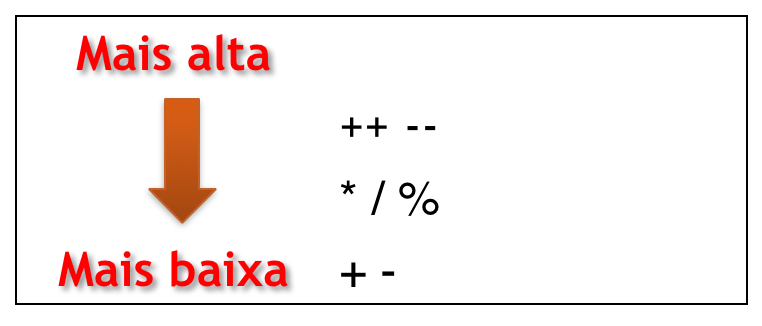
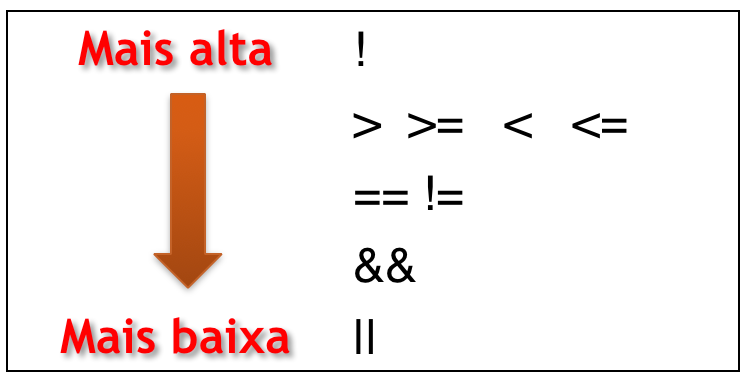

### Tipos básicos, variáveis, constantes e expressões --- ### Objetivos Nesta aula aprenderemos a: * Utilizar corretamente os diferentes _tipos de dados_ de C++. * Utilizar corretamente os diferentes _operadores_ (aritméticos, relacionais e lógicos). #### Problemas a solucionar * *Armazenar* diferentes tipos de informações. * Realizar *operações* simples (aritméticas, lógicas, etc). --- #### Vídeo: Variáveis e Tipos (15:57) --- <iframe width="1206" height="678" src="https://www.youtube.com/embed/R8xxBlvdo8o?list=PLLjLO9s7KS4UBrOBelz0GyfiFn4CSqquH" frameborder="0" allow="accelerometer; autoplay; encrypted-media; gyroscope; picture-in-picture" allowfullscreen></iframe> --- ### Tipos de Dados - Informações diferentes necessitam de _espaço de memória_ diferentes. - Cada tipo organiza as informações de forma diferente. ```cpp bool b ; // true / false (1 byte) int n ; // inteiros de 4 bytes (~ 2 bilhoes) long N; // inteiros de 8 bytes float f ; // 4 bytes double d ; // 8 bytes ``` --- ### Tipos de Dados Será que ```int``` e $\mathcal{Z}$ (conjunto dos números inteiros) são iguais? - 1234 + 1 = 1235 - 15400 + 1 = 15401 - 2147483647+1 = 2147483648 <!-- .element: class="fragment" --> ```cpp[1-3|4-7|6-9] int main(){ // Imprime 1235 cout << 1234+1 << endl; // Imprime 15401 cout << 15400+1 << endl; // Overflow Imprime -2147483648 ! cout << 2147483647 + 1 << endl ; return 0; } ``` <!-- .element: class="fragment" --> --- ### Overflow (Ariane 5) <iframe width="478" height="358" src="https://www.youtube.com/embed/kYUrqdUyEpI" frameborder="0" allow="accelerometer; autoplay; encrypted-media; gyroscope; picture-in-picture" allowfullscreen></iframe> _US $370 milhões de prejuízo!_ --- ### Overflow (Ariane 5) - A anomalia interna de software ocorreu durante a execução *de uma conversão de dados de um número de 64 bits em ponto flutuante para um inteiro de 16 bits com sinal*. - O valor do número em ponto flutuante era maior do que poderia ser representado pelo inteiro de 16 bits com sinal. - O resultado foi um operando inválido. [Mais informação](https://www.bbc.com/portuguese/noticias/2015/05/150513_vert_fut_bug_digital_ml). --- ### Números de ponto flutuante 0.1 + 0.2 = ? ```cpp int main(){ cout.precision(20); cout << 0.1 + 0.2 << endl; // 0.30000000000000004441 return 0; } ``` <!-- .element: class="fragment" --> _```float``` é só uma aproximação de $\mathcal{R}$_ <!-- .element: class="fragment" --> --- #### Vídeo: Variáveis e constantes (7:52) --- <iframe width="1206" height="679" src="https://www.youtube.com/embed/llcQx0fCBvA?list=PLLjLO9s7KS4UBrOBelz0GyfiFn4CSqquH" frameborder="0" allow="accelerometer; autoplay; encrypted-media; gyroscope; picture-in-picture" allowfullscreen></iframe> --- #### Vídeo: Expressões e Operadores (22m) --- <iframe width="1206" height="678" src="https://www.youtube.com/embed/rF7Xq7F8Qw0?list=PLLjLO9s7KS4UBrOBelz0GyfiFn4CSqquH" frameborder="0" allow="accelerometer; autoplay; encrypted-media; gyroscope; picture-in-picture" allowfullscreen></iframe> --- ### Precedência dos operadores aritméticos  Operadores do _mesmo nível de precedência_, em uma mesma linha, são avaliados da *esquerda para a direita*. ```cpp[1|2|3] 3 * 4 * 2 / 8 = 12 * 2 / 8 = 24 / 8 = 3 ``` --- ### Precedência dos operadores lógicos e relacionais  Menor precedência que os operadores artiméticos ```cpp[1|2|3|4] x = 3 + 2 >= 5 / 2 x = 5 >= 5 / 2 x = 5 >= 2 x = 1 ``` --- #### Vídeo: Casting (8:10) --- <iframe width="1206" height="678" src="https://www.youtube.com/embed/aJHJGCuNDhc?list=PLLjLO9s7KS4UBrOBelz0GyfiFn4CSqquH" frameborder="0" allow="accelerometer; autoplay; encrypted-media; gyroscope; picture-in-picture" allowfullscreen></iframe> --- ### Conversão de tipos em expressões ```cpp float f = 3.2; int x = f ; // x = 3 ``` ```cpp int x = 3 , y = 2; float f = x / y; // f= 1!! // Type cast f = (float) x / y ; // 1.5 ``` --- ### Conversão de tipos em expressões ```cpp[1-5|6-7] int + int = int long + int = long int / int = int float * float = float float - double = double char c = 'a'; int x = c + 1; // char + int = int x = 98 ``` Quando operandos de tipos diferentes são misturados em uma expressão, os valores são convertidos no tipo do _maior operando_. --- ## TEST! ### Multiprova <https://site.multiprova.ufrn.br/>